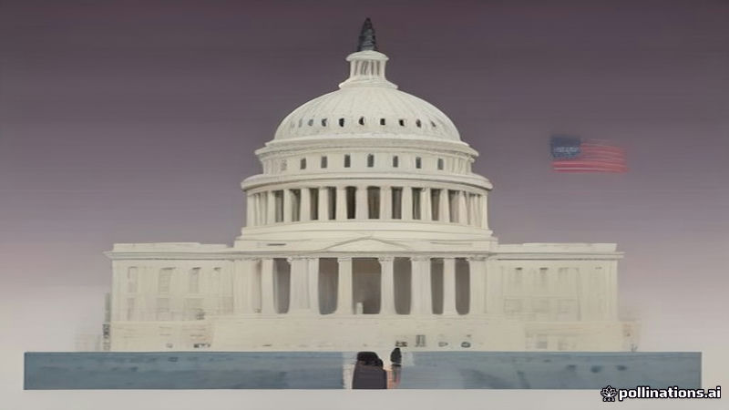

ডেমোক্র্যাট নেতারা মধ্যমেয়াদি জয় উদযাপন
Al Jazeera English · 2026-11-04
AI-generated illustrationঅ্যাল জাজিরা ইংরেজি অনুযায়ী, কংগ্রেসের উভয় চেম্বারে শীর্ষ ডেমোক্র্যাটরা পার্টির বিজয়কে প্রশংসা করেছেন।
হাউস অফ রিপ্রেজেন্টেটিভস ও সেনেটে শীর্ষ ডেমোক্র্যাট নেতারা সাম্প্রতিক মধ্যমেয়াদি নির্বাচনে পার্টির পারফরম্যান্সকে প্রশংসা করেছেন। তারা ফলাফলকে ডেমোক্র্যাটদের জন্য একটি বিশাল জয় হিসেবে বর্ণনা করেছেন এবং এটি পার্টির আইনসভার এজেন্ডার জন্য গুরুত্বপূর্ণ বলে উল্লেখ করেছেন।
অ্যাল জাজিরা ইংরেজি জানায়, এই উদযাপন পার্টির আত্মবিশ্বাসকে প্রতিফলিত করে এবং পরবর্তী সেশনে মূল নীতি অগ্রাধিকার বাস্তবায়নের প্রস্তুতি নির্দেশ করে।
Read the original reporting at the links above.
English version
Democratic Leaders Celebrate Midterm Victory
Democratic leaders in both the House of Representatives and the Senate have publicly praised their party's performance in the recent midterm elections. The leaders described the outcome as a resounding victory for the Democrats, emphasizing the significance of the results for the party's legislative agenda.
According to Al Jazeera English, the celebration reflects the party's confidence heading into the next congressional session, with leaders highlighting broad voter support and signaling readiness to advance key policy priorities.